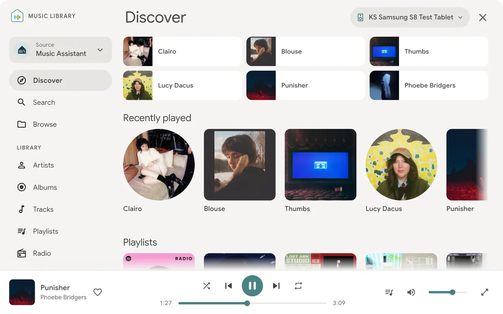

Kiosk Satellite
- 把 Android 设备变成 Home Assistant 专用信息终端的项目。

- 3/5 个维度有可核验来源
- 仅用有可核验来源的维度计算；未取证维度保留为 null，不用中性分补位。
候选路线
- 可能用途 评估把闲置手机或平板用作 Home Assistant 面板。
- 设备范围 GitHub 描述称任意 Android 设备；具体系统版本、传感器与长时运行表现尚未核验。
- 目前已知 把 Android 设备变成 Home Assistant 专用信息终端的项目。
- GitHub Turn any Android device into a beautiful, dedicated Home Assistant kiosk. Purpose-built for Home Assistant from the ground up.
- 证据说明 E0 发现候选；描述仅依据 GitHub 仓库元数据，尚未独立核验具体设备兼容、安装结果、恢复路径或长期稳定性。
- 核查记录 PS-kiosk-satellite · 2026-10-23T16:55:18Z
动手前
- 如果找不到与准确型号、硬件修订和固件相符的安装与恢复资料，不要刷写、拆机或购买配件。
仓库快照
- 归档 否；核查时未归档
- 最后 push 2026-10-23T16:35:00Z
- 默认分支 main
- API 许可证标识 NOASSERTION
- 许可证快照不自动覆盖固件、模型、图片、商标或第三方组件；最后 push 也不证明设备兼容。